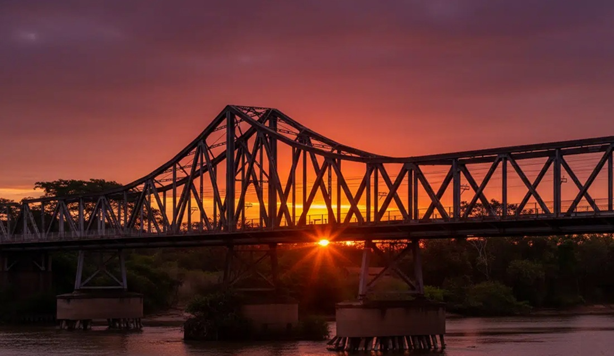
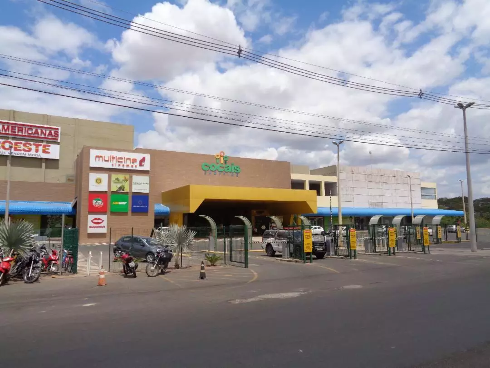
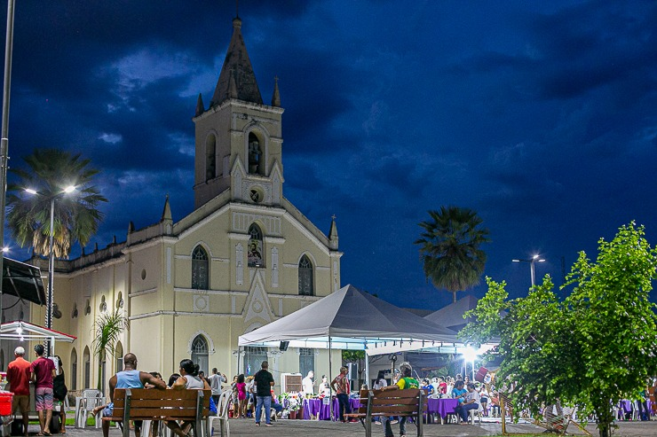
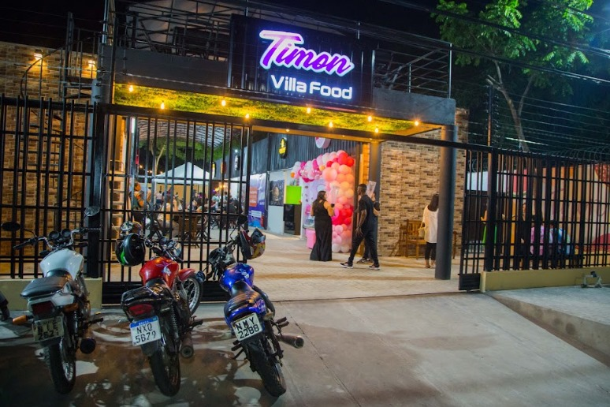
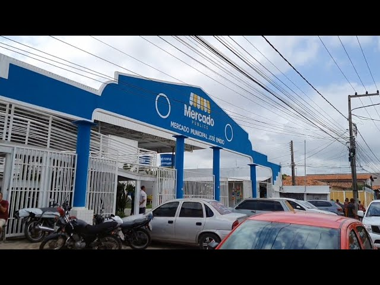

Vista aérea da cidade de Timon, destacando sua paisagem urbana e a proximidade com o rio
Parnaíba.
Timon é um destino que surpreende pela autenticidade e pelo calor humano. Às margens do rio
Parnaíba,
conectada e integrada à dinâmica urbana de Teresina, a cidade revela uma combinação única entre
tranquilidade e movimento urbano. Em Timon, cada esquina carrega traços da cultura nordestina, com
sabores marcantes, encontros nas praças e uma atmosfera acolhedora que conquista quem visita. Mais
do
que um lugar no mapa, Timon é uma experiência simples, real, cheia de identidade e perfeita para
quem
busca descobrir o verdadeiro espírito do Nordeste.
Destinos imperdíveis
Conheça alguns dos principais pontos da cidade
As atrações de Timon revelam um pouco do estilo de vida da cidade, com opções que vão desde
pontos
movimentados até espaços mais tranquilos para aproveitar o tempo com calma. Ao explorar seus
diferentes ambientes, é possível encontrar experiências variadas que combinam lazer, convivência
e
momentos de descontração. A seguir, conheça alguns dos locais que fazem parte do dia a dia e que
valem a visita.
Ponte Metálica João Luís Ferreira

A Ponte Metálica João Luís Ferreira é um dos melhores pontos para apreciar o pôr do sol na
região,
oferecendo uma vista ampla do rio Parnaíba com o contraste entre as cidades de Teresina e Timon
ao
fundo; no fim da tarde, a estrutura metálica ganha tons dourados enquanto o céu se reflete na
água,
criando um cenário marcante e perfeito para fotos ou para relaxar, sendo ideal chegar entre 17h
e
17h30 para acompanhar todo o espetáculo até o sol se pôr.
Shopping Cocais

O Cocais Shopping é um dos principais pontos de lazer da cidade, reunindo diversas opções em um
só
lugar: possui cinema com várias salas (incluindo 3D), ideal para quem quer curtir filmes
recentes,
uma praça de alimentação que concentra diferentes opções para comer e relaxar, além de uma
grande
variedade de lojas que vão de roupas e acessórios até tecnologia e serviços.
O espaço também recebe eventos importantes ao longo do ano, como shows, festivais culturais e
comemorações da cidade, além de atrações temporárias como parques de diversão no estacionamento,
tornando o shopping um ambiente completo tanto para passear quanto para se divertir com amigos e
família.
Praça São José

A Praça São José é um dos pontos mais movimentados da cidade, especialmente à noite, quando se
transforma em um verdadeiro polo gastronômico e de lazer. O local fica cheio de lanchonetes e
barracas com opções como cachorro-quente, sanduíches variados, bebidas como o tradicional
guaraná da
Amazônia e sorveterias ao redor, além de contar frequentemente com música ao vivo, criando um
ambiente animado e perfeito para quem quer comer bem, passear e curtir com amigos ou família.
Timon Villa Food

A Villa Food de Timon é um dos espaços mais modernos e completos de lazer gastronômico da
cidade, funcionando como uma espécie de “praça de alimentação a céu aberto”, onde várias opções
de comida se reúnem em um só lugar.
Lá você encontra desde hambúrgueres, pizzas e espetinhos até sushi, açaí, sobremesas e bebidas,
tudo em um ambiente organizado, arejado e ideal para sair com amigos ou família, além de contar
com espaço infantil e um clima animado que combina com um bom happy hour à noite, sendo o tipo
de lugar perfeito para quem quer variedade, praticidade e uma experiência diferente em Timon.
Mercado Municipal José Emídio

O Mercado Municipal José Emídio, conhecido popularmente como o mercado da Formosa, é um dos
lugares mais tradicionais da cidade, ideal para quem quer vivenciar o cotidiano local e
encontrar de tudo um pouco em um só lugar: por lá você encontra frutas, verduras, carnes, peixes
frescos e diversos produtos regionais, além de pequenos restaurantes e bancas que servem comidas
típicas, sendo também um ótimo ponto para tomar café da manhã ou almoçar com pratos simples e
saborosos; é um espaço sempre movimentado, especialmente nas primeiras horas do dia, e vale a
visita tanto pela variedade quanto pela experiência autêntica do comércio popular de Timon.
Timon é uma cidade que combina simplicidade, cultura e boas experiências, oferecendo desde pontos
turísticos com belas paisagens até espaços de lazer, gastronomia e convivência que refletem o dia a
dia
acolhedor da região.